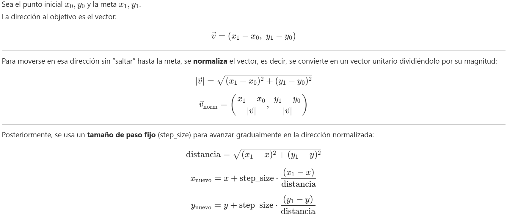

Tutoriales
Creación de un espacio de trabajo
A continuación, se realiza la creación de un espacio de trabajo
denominado ros2_ws
Creación del espacio de trabajo
mkdir -p ~/ros2_ws/src
cd ~/ros2_ws
colcon build
echo "source ~/ros2_ws/install/setup.bash" >> ~/.bashrc
source ~/.bashrc
Creación Paquetes
Una vez construido el espacio de trabajo, se debe realizar la
construcción de un paquete de ROS2, en este caso se utilizará un paquete
compatible con python, y tendrá las dependencias de std_msgs
Crear el paquete
cd ~/ros2_ws/src
ros2 pkg create mi_pkg_python --build-type ament_python --dependencies rclpy std_msgs
Estructura generada
mi_pkg_python/
├── mi_pkg_python/
│ └── __init__.py
├── package.xml
├── resource/
│ └── mi_pkg_python
├── setup.py
├── setup.cfg
└── test/
Compilar el paquete
cd ~/ros2_ws
colcon build --packages-select mi_pkg_python
Nodos publicador y Suscriptor
Una vez compilado el paquete, se realiza la creación de los nodos publicador y suscriptor.
Crear el archivo del nodo publicador
touch mi_pkg_python/mi_pkg_python/publicador.py
touch mi_pkg_python/mi_pkg_python/suscriptor.py
Agregar el código
# Importa la librería principal de ROS 2 en Python
import rclpy
# Importa la clase base Node, que representa un nodo en ROS 2
from rclpy.node import Node
# Importa el tipo de mensaje estándar String del paquete std_msgs
from std_msgs.msg import String
# Define una clase que extiende Node, representando un nodo que publica mensajes
class MinimalPublisher(Node):
def __init__(self):
# Llama al constructor de la clase padre (Node) con el nombre del nodo
super().__init__('minimal_publisher')
# Crea un publicador que publica mensajes del tipo String en el topic 'topic' con una cola de 10 mensajes
self.publisher_ = self.create_publisher(String, 'topic', 10)
# Crea un temporizador que ejecuta la función `timer_callback` cada 0.5 segundos
self.timer = self.create_timer(0.5, self.timer_callback)
# Contador para numerar los mensajes
self.i = 0
# Función que se ejecuta cada 0.5 segundos
def timer_callback(self):
# Crea un mensaje tipo String
msg = String()
# Asigna el contenido del mensaje
msg.data = f'Hello World: {self.i}'
# Publica el mensaje en el topic
self.publisher_.publish(msg)
# Muestra por consola el mensaje publicado
self.get_logger().info(f'Publishing: "{msg.data}"')
# Incrementa el contador
self.i += 1
# Punto de entrada principal del programa
def main(args=None):
# Inicializa el sistema de nodos de ROS 2
rclpy.init(args=args)
try:
# Instancia el nodo y empieza a ejecutarlo
node = MinimalPublisher()
# Mantiene al nodo activo, escuchando eventos y timers
rclpy.spin(node)
except KeyboardInterrupt:
# Permite salir con Ctrl+C sin error
pass
finally:
# Destruye el nodo de forma limpia y apaga el sistema ROS 2
node.destroy_node()
rclpy.shutdown()
# Verifica si el archivo se está ejecutando directamente (no importado)
if __name__ == '__main__':
main()
# Importa la librería principal de ROS 2 para Python
import rclpy
# Importa la clase base para crear nodos en ROS 2
from rclpy.node import Node
# Importa el tipo de mensaje estándar String desde std_msgs
from std_msgs.msg import String
# Define una clase que hereda de Node, representa el nodo suscriptor
class MinimalSubscriber(Node):
# Método constructor de la clase
def __init__(self):
# Inicializa el nodo con el nombre 'minimal_subscriber'
super().__init__('minimal_subscriber')
# Crea una suscripción al tópico 'topic'
# Tipo de mensaje: String
# Función de callback: self.listener_callback
# Tamaño de la cola: 10 mensajes
self.subscription = self.create_subscription(
String,
'topic',
self.listener_callback,
10)
# Esta línea asegura que la variable no sea optimizada por el compilador (aunque no es obligatorio en Python)
self.subscription
# Función que se llama cada vez que se recibe un mensaje en el tópico
def listener_callback(self, msg):
# Imprime en consola el contenido del mensaje recibido
self.get_logger().info('I heard: "%s"' % msg.data)
# Función principal que lanza el nodo
def main(args=None):
# Inicializa el sistema de ROS 2
rclpy.init(args=args)
# Crea una instancia del nodo suscriptor
minimal_subscriber = MinimalSubscriber()
# Mantiene el nodo corriendo escuchando datos (callback se ejecutará cuando lleguen mensajes)
rclpy.spin(minimal_subscriber)
# Cuando se detiene (Ctrl+C o cierre), se destruye el nodo explícitamente (opcional)
minimal_subscriber.destroy_node()
# Finaliza la ejecución del sistema ROS 2
rclpy.shutdown()
# Esta verificación permite que el nodo se ejecute solo si el script se corre directamente
if __name__ == '__main__':
main()
Registrar los nodos en
setup.py
entry_points={
'console_scripts': [
'publicador1 = mi_pkg_python.publicador:main',
'suscriptor1 = mi_pkg_python.suscriptor:main',
],
},
Compilar el paquete
cd ~/ros2_ws
colcon build --packages-select mi_pkg_python
Ejecutar el nodo publicador
ros2 run mi_pkg_python publicador1
en una terminal diferente ejecutar el nodo suscriptor
ros2 run mi_pkg_python suscriptor1
Paquetes con mensajes personalizados
Los mensajes personalizados permiten crear un paquete exclusivo para
generar estructuras personales de mensajes en ROS2 usando
ament_cmake, ademas de poder integrarlos a otros paquetes.
Antes de continuar con la generación de mensajes es necesario revisar, que tipos de mensajes están disponibles:
ros2 interface list | grep msg
y la revisión de los parámetros del mensaje se realiza mediante el comand:
ros2 interface show [tipo de mensaje]
Ahora, se va a crear un paquete llamado avig_msg que defina un
mensaje personalizado AprilTagPixel.msg con los siguientes campos:
string id
int32 posx
int32 posy
Crear el paquete
Desde la carpeta src del workspace:
ros2 pkg create avig_msg --build-type ament_cmake
Este comando genera la estructura básica del paquete avig_msg.
Crear el mensaje personalizado
cd avig_msg
mkdir msg
gedit msg/AprilTagPixel.msg
Contenido:
int32 id
float32 posx
float32 posy
int32 orden
float32 dist
Este archivo define un mensaje simple para enviar datos de detección de un tag.
Mensajes compuestos
Se puede crear mensajes que tengan anidada mas información en este caso
se va a crear un array de AprilTagPixel.msg.
Dentro del paquete avig_msg
cd msg
gedit AprilTagPixelArray.msg
Contenido:
AprilTagPixel[] tags
Editar
CMakeLists.txt
Editar CMakeLists.txt para incluir soporte de mensajes:
cmake_minimum_required(VERSION 3.8)
project(avig_msg)
find_package(ament_cmake REQUIRED)
find_package(rosidl_default_generators REQUIRED)
find_package(builtin_interfaces REQUIRED)
rosidl_generate_interfaces(${PROJECT_NAME}
"msg/AprilTagPixel.msg"
"msg/AprilTagPixelArray.msg"
DEPENDENCIES builtin_interfaces
)
ament_export_dependencies(rosidl_default_runtime)
ament_package()
¿Por qué? - rosidl_default_generators genera los bindings del
mensaje. - builtin_interfaces es requerido si se usan tipos nativos
como string, int32. - ament_export_dependencies permite que
otros paquetes importen estos mensajes.
Editar
package.xml
Agregar las dependencias necesarias:
<buildtool_depend>ament_cmake</buildtool_depend>
<build_depend>rosidl_default_generators</build_depend>
<exec_depend>rosidl_default_runtime</exec_depend>
<member_of_group>rosidl_interface_packages</member_of_group>
¿Por qué? Estas etiquetas aseguran que el sistema de compilación de ROS 2 reconozca este paquete como generador de interfaces.
Compilar e instalar
Desde la raíz del workspace:
cd ~/ros2_ws
colcon build --packages-select avig_msg
source install/setup.bash
Verificar el mensaje
ros2 interface show avig_msg/msg/AprilTagPixel
Usar el mensaje en otro paquete
En el paquete creado anteriormente de Python mi_pkg_python:
En package.xml:
<exec_depend>avig_msg</exec_depend>
En el código Python:
from avig_msg.msg import AprilTagPixel
Se puede usar en un publicador o suscriptor como cualquier otro mensaje.
Servicios personalizados
En el servicio personalizado se agrega la funcionalidad de una Heuristica al sistema de control del robot.
Definición general Una heurística es una regla, método o estrategia que simplifica la toma de decisiones y permite encontrar soluciones aproximadas en situaciones complejas, donde el cálculo exacto sería muy costoso o imposible.
Para ello, se establece un servicio que tiene como requerimiento el tipo
de mensaje AprilTagPixelArray y como respuesta un AprilTagPixel
Creación del archivo srv
Dentro del paquete avig_msg
mkdir srv
cd srv
gedit Heuristica.srv
Contenido:
avig_msg/AprilTagPixelArray tags_in
---
avig_msg/AprilTagPixel tag_out
Esto indica que el servicio recibirá una lista de tags y devolverá solo uno como resultado.
Configurar CMakeLists.txt
Agrega lo siguiente si no está presente:
find_package(rosidl_default_generators REQUIRED)
Agrega todos los archivos .msg y .srv:
rosidl_generate_interfaces(${PROJECT_NAME}
"msg/AprilTagPixel.msg"
"msg/AprilTagPixelArray.msg"
"srv/Heuristica.srv"
DEPENDENCIES builtin_interfaces
)
revisar que se encuentren exportadas las dependencias:
ament_export_dependencies(rosidl_default_runtime)
Configurar package.xml
Incluye los siguientes bloques:
<buildtool_depend>ament_cmake</buildtool_depend>
<build_depend>rosidl_default_generators</build_depend>
<exec_depend>rosidl_default_runtime</exec_depend>
<member_of_group>rosidl_interface_packages</member_of_group>
Compilar
Desde la raíz del workspace:
colcon build --packages-select avig_msg
source install/setup.bash
Verifica el servicio:
ros2 interface show avig_msg/srv/Heuristica
Crear el Servidor
Dentro del paquete mi_pkg_python
mkdir servicios
cd servicios
touch __initi__.py
Guarda el siguiente código como srv_servidor.py y srv_cliente.py:
import rclpy
from rclpy.node import Node
from avig_msg.srv import Heuristica
from avig_msg.msg import AprilTagPixel
import math
class EuristicaServer(Node):
def __init__(self):
super().__init__('euristica_server')
self.srv = self.create_service(Heuristica, 'Heuristica', self.heuristica_callback)
self.get_logger().info('Servicio Euristica listo.')
def heuristica_callback(self, request, response):
tags = request.tags_in.tags
self.get_logger().info(f"Recibidos {tags} tags.")
if not tags:
self.get_logger().warn("No se recibió ningún tag.")
return response
tag1 = next((tag for tag in tags if tag.id == 1), None)
tag2 = next((tag for tag in tags if tag.id == 2), None)
if tag1 is None or tag2 is None:
self.get_logger().warn("Faltan tag1 o tag2, no se puede continuar.")
return response
tags_ordenados = [tag for tag in tags if tag.id != 0 and tag.id != 1 and tag.id != 2]
for i, tag in enumerate(tags_ordenados):
self.get_logger().info(f"Revisando el tag: {tag.id}")
if 10 <= tag.id < 20:
tag.dist = math.sqrt((tag.posx - tag1.posx)**2 + (tag.posy - tag1.posy)**2)
else:
tag.dist = math.sqrt((tag.posx - tag2.posx)**2 + (tag.posy - tag2.posy)**2)
self.get_logger().info(f"Distancia del Tag: {tag.id} es {tag.dist}")
# Heurística: devolver el tag con menor coordenada posx
tag_ordenado = sorted(tags_ordenados, key=lambda t: t.dist)[0]
response.tag_out = tag_ordenado
self.get_logger().info(f"Tag elegido: {tag_ordenado.id}")
return response
def main(args=None):
rclpy.init(args=args)
node = EuristicaServer()
rclpy.spin(node)
rclpy.shutdown()
if __name__ == '__main__':
main()
import rclpy
from rclpy.node import Node
from avig_msg.srv import Heuristica
from avig_msg.msg import AprilTagPixel, AprilTagPixelArray
class EuristicaClient(Node):
def __init__(self):
super().__init__('euristica_client')
self.client = self.create_client(Heuristica, 'Heuristica')
while not self.client.wait_for_service(timeout_sec=1.0):
self.get_logger().info('Esperando al servicio...')
# Crear solicitud con varios tags
msg_array = AprilTagPixelArray()
for i in range(10, 19, 1):
tag = AprilTagPixel()
tag.id = i
tag.posx = float(100 - i*10)
tag.posy = float(50 + i*10)
msg_array.tags.append(tag)
tag = AprilTagPixel()
tag.id = 1
tag.posx = -20.0
tag.posy = 170.0
msg_array.tags.append(tag)
tag = AprilTagPixel()
tag.id = 2
tag.posx = 105.2
tag.posy = 23.5
msg_array.tags.append(tag)
request = Heuristica.Request()
request.tags_in = msg_array
self.future = self.client.call_async(request)
def main(args=None):
rclpy.init(args=args)
node = EuristicaClient()
while rclpy.ok():
rclpy.spin_once(node)
if node.future.done():
try:
response = node.future.result()
node.get_logger().info(f"Tag seleccionado: {response.tag_out}")
node.get_logger().info(f"Tag ID: {response.tag_out.id} "
f"({response.tag_out.posx:.1f}, {response.tag_out.posy:.1f})")
except Exception as e:
node.get_logger().error(f"Error al llamar al servicio: {e}")
break
rclpy.shutdown()
if __name__ == '__main__':
main()
El nodo servidor
Responde a solicitudes del servicio
HeuristicaElige el tag con menor distancia al tag 1 o al tag 2 (
dist)
El nodo cliente:
Crea y envía una lista de
AprilTagPixelSolicita una respuesta del servidor
Muestra el tag seleccionado
Registrar los nodos en setup.py
En tu setup.py agrega:
entry_points={
'console_scripts': [
'servidor = servicio.srv_servidor:main',
'cliente = servicio.srv_cliente:main',
],
},
Compilar el paquete
Ejecutar
En dos terminales diferentes:
bash ros2 run mi_pkg_python servidor
bash ros2 run mi_pkg_python cliente
Implementación de una Acción Personalizada
En esta acción personalizada llamada MoverA se simula el movimiento de un robot hacia una posición (x, y) objetivo, utilizando el sistema de
acciones de ROS 2.
La acción representa como el robot se mueve gradualmente en línea recta hacia la meta, acercándose poco a poco hasta que la distancia sea menor a un umbral (por ejemplo, 0.1).
La trayectoría que se simulará en este ejercicio obedece los siguientes puntos:


Estructura general
Paquete de mensajes:
avig_msgArchivo de acción:
MoverA.actionPaquete de código (cliente/servidor):
mi_pkg_python
Definición de
MoverA.action
Ubicar en avig_msg/action/MoverA.action:
# Objetivo
float32 x_actual
float32 y_actual
float32 x_meta
float32 y_meta
---
# Resultado
bool success
---
# Feedback
float32 distancia_restante
Configurar
CMakeLists.txtenavig_msg
Agregar:
find_package(rosidl_default_generators REQUIRED)
rosidl_generate_interfaces(${PROJECT_NAME}
"action/MoverA.action"
DEPENDENCIES builtin_interfaces
)
ament_export_dependencies(rosidl_default_runtime)
Configurar
package.xmlenavig_msg
Agregar:
<buildtool_depend>ament_cmake</buildtool_depend>
<build_depend>rosidl_default_generators</build_depend>
<exec_depend>rosidl_default_runtime</exec_depend>
<member_of_group>rosidl_interface_packages</member_of_group>
Dentro del paquete
mi_pkg_pythoncrar los programas:action_server.pyyaction_client.py
import rclpy
from rclpy.node import Node
from rclpy.action import ActionServer, GoalResponse, CancelResponse
from avig_msg.action import MoverA
import math
# Definición de la clase del servidor de acción
class MoverAServer(Node):
def __init__(self):
# Inicializa el nodo con nombre 'movera_server'
super().__init__('movera_server')
# Crea un servidor de acción para la acción personalizada 'MoverA'
self._action_server = ActionServer(
self,
MoverA,
'mover_a', # Nombre del tópico de acción
execute_callback=self.execute_callback, # Lógica principal de ejecución
goal_callback=self.goal_callback, # Qué hacer cuando llega una meta
cancel_callback=self.cancel_callback # Qué hacer si el cliente pide cancelar
)
self.goal_handle = None # Guardará el manejador de la meta actual
self.timer = None # Temporizador usado para simular movimiento
# Callback que se ejecuta cuando se recibe una nueva meta
def goal_callback(self, goal_request):
self.get_logger().info('Objetivo recibido.')
return GoalResponse.ACCEPT # Acepta todas las metas que recibe
# Callback que se ejecuta cuando se solicita cancelar una meta
def cancel_callback(self, goal_handle):
self.get_logger().info('Cancelación solicitada.')
return CancelResponse.ACCEPT # Acepta siempre la cancelación
# Lógica principal que se ejecuta cuando la meta ha sido aceptada
async def execute_callback(self, goal_handle):
self.goal_handle = goal_handle
# Extrae posición inicial y meta desde la solicitud
self.x_actual = goal_handle.request.x_actual
self.y_actual = goal_handle.request.y_actual
self.x_goal = goal_handle.request.x_meta
self.y_goal = goal_handle.request.y_meta
self.step_size = 0.1 # Tamaño de paso por iteración
# Crea el objeto de feedback que será enviado al cliente
self.feedback_msg = MoverA.Feedback()
self.get_logger().info(f'Iniciando movimiento: ({self.x_actual:.2f}, {self.y_actual:.2f}) → ({self.x_goal:.2f}, {self.y_goal:.2f})')
# Crea un temporizador que se ejecuta cada 0.5 segundos
self.timer = self.create_timer(0.5, self.update_position)
# Bucle que espera mientras se ejecuta el temporizador
while not goal_handle.is_cancel_requested and self.distance(self.x_actual, self.y_actual) > 0.1:
# Procesa eventos del temporizador
rclpy.spin_once(self, timeout_sec=0.1)
# Si el cliente cancela la acción
if goal_handle.is_cancel_requested:
self.timer.cancel() # Detiene el temporizador
goal_handle.canceled() # Informa al cliente que fue cancelado
self.get_logger().warn("Objetivo cancelado por el cliente")
return MoverA.Result(success=False)
# Si se llegó al destino
self.timer.cancel() # Detiene el temporizador
goal_handle.succeed() # Marca como completado con éxito
self.get_logger().info("Objetivo alcanzado")
return MoverA.Result(success=True)
# Función ejecutada periódicamente por el temporizador
def update_position(self):
if not self.goal_handle:
return
# Calcula la distancia restante
dist = self.distance(self.x_actual, self.y_actual)
if dist <= 0.1:
return # Ya está suficientemente cerca
# Simula movimiento en línea recta hacia la meta
self.x_actual += self.step_size * (self.x_goal - self.x_actual) / dist
self.y_actual += self.step_size * (self.y_goal - self.y_actual) / dist
# Calcula nueva distancia y envía feedback
dist = self.distance(self.x_actual, self.y_actual)
self.feedback_msg.distancia_restante = float(dist)
self.goal_handle.publish_feedback(self.feedback_msg)
self.get_logger().info(f"Distancia restante: {dist:.2f}")
# Función auxiliar para calcular la distancia euclidiana al objetivo
def distance(self, x, y):
return math.sqrt((x - self.x_goal)**2 + (y - self.y_goal)**2)
# Función principal para ejecutar el servidor de acción
def main(args=None):
rclpy.init(args=args)
node = MoverAServer() # Crea el servidor
rclpy.spin(node) # Mantiene el nodo activo
rclpy.shutdown() # Apaga ROS 2 cuando termina
if __name__ == '__main__':
main()
import rclpy
from rclpy.node import Node
from rclpy.action import ActionClient
from avig_msg.action import MoverA # Importa la acción personalizada
# Definición de la clase cliente de acción
class MoverAClient(Node):
def __init__(self):
# Inicializa el nodo con nombre 'movera_client'
super().__init__('movera_client')
# Crea un cliente de acción para comunicarse con el servidor
self._client = ActionClient(self, MoverA, 'mover_a')
self._goal_handle = None # Guardará la referencia a la meta enviada
# Método para enviar una meta al servidor de acción
def send_goal(self, xi, yi, xm, ym):
# Define los valores de posición inicial y objetivo
goal_msg = MoverA.Goal()
goal_msg.x_actual = xi
goal_msg.y_actual = yi
goal_msg.x_meta = xm
goal_msg.y_meta = ym
# Espera a que el servidor esté disponible
self._client.wait_for_server()
self.get_logger().info(f'Enviando objetivo: x={xi}, y={yi} → x={xm}, y={ym}')
# Envía la meta de forma asíncrona y se suscribe a feedback
self._send_goal_future = self._client.send_goal_async(
goal_msg,
feedback_callback=self.feedback_callback
)
self._send_goal_future.add_done_callback(self.goal_response_callback)
# Callback que se ejecuta cada vez que el servidor envía feedback
def feedback_callback(self, feedback_msg):
dist = feedback_msg.feedback.distancia_restante
self.get_logger().info(f'Feedback: distancia restante = {dist:.2f}')
# Lógica personalizada: si estamos suficientemente cerca, solicitamos cancelación
if dist < 0.8 and self._goal_handle is not None:
self.get_logger().warn('Cancelando acción por distancia < 0.3...')
cancel_future = self._goal_handle.cancel_goal_async()
cancel_future.add_done_callback(self.cancel_callback)
# Callback que se ejecuta cuando el servidor responde si acepta o no la meta
def goal_response_callback(self, future):
self._goal_handle = future.result()
if not self._goal_handle.accepted:
self.get_logger().error('Objetivo rechazado.')
return
self.get_logger().info('Objetivo aceptado.')
# Espera de forma asíncrona el resultado final
self._get_result_future = self._goal_handle.get_result_async()
self._get_result_future.add_done_callback(self.result_callback)
# Callback que se ejecuta cuando se responde la solicitud de cancelación
def cancel_callback(self, future):
cancel_response = future.result()
if len(cancel_response.goals_canceling) > 0:
self.get_logger().info('Acción cancelada exitosamente.')
else:
self.get_logger().info('No se pudo cancelar la acción.')
# Callback que se ejecuta cuando se recibe el resultado final del servidor
def result_callback(self, future):
result = future.result().result
if result.success:
self.get_logger().info('Llegamos al destino.')
else:
self.get_logger().info('Acción no completada.')
rclpy.shutdown()
# Función principal para ejecutar el cliente
def main(args=None):
rclpy.init(args=args)
node = MoverAClient()
# Envía una meta de ejemplo
node.send_goal(2.0, 3.0, 0.0, 0.1)
# Mantiene el nodo activo mientras espera feedback/resultados
rclpy.spin(node)
if __name__ == '__main__':
main()
El cliente:
Envía un objetivo
(x, y)con la posición inicial y un objetivo(x, y)con la posición meta al servidor.Imprime el feedback recibido.
Muestra el resultado final.
El servidor:
Recibe un objetivo de la posición inicial
(x, y)y de la posiciónobjetivo(x, y).Simula el movimiento hacia la meta.
Envía
feedbackde la distancia restante.Devuelve
success = truesi llega al destino.
setup.py Registrar scripts en el
setup.pydeacciones:
entry_points={
'console_scripts': [
'action_server = acciones.action_server:main',
'action_client = acciones.action_client:main',
],
}
Compilación
Desde la raíz del workspace:
colcon build
source install/setup.bash
Ejecución
En una terminal, ejecutar el servidor:
ros2 run mi_pkg_python action_server
En otra terminal, ejecutar el cliente:
ros2 run mi_pkg_python action_client